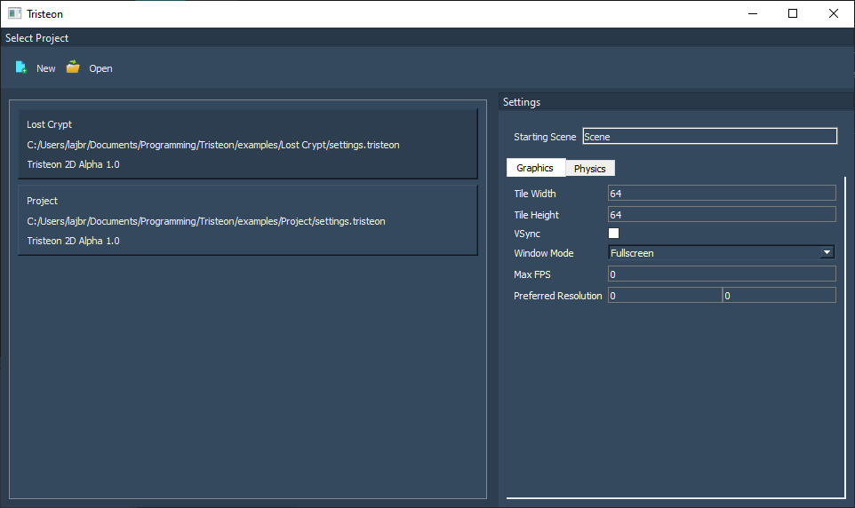
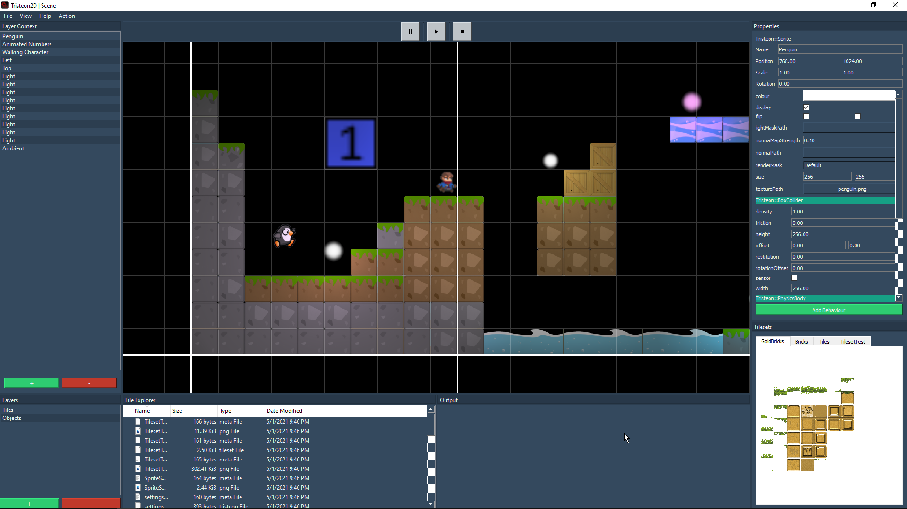

Getting Started¶
Tristeon is still a work in progress and no installer/binaries have been released yet! If you'd like to play around with the project in its current state, you'll have to build it manually for now. We aim to simplify building Tristeon as much as we possibly can. This process is stil a work in progress so please bear with us for the time being.
Officially supported programming environments (all x64):
Windows | MSVC 2019 | x64
Windows | MSVC 2019 (LLVM clang-cl) | x64
Ubuntu 20.04 (LTS) | GCC | x64
Ubuntu 20.04 (LTS)| Clang | x64 (built, not tested)
Prerequisites¶
CMake CMake is used for project generation. To be able to build Tristeon, please make sure that you've got CMake 3.7 or higher installed [https://cmake.org/download/].
Qt Tristeon's editor uses the Qt5 framework for editor tooling. Our tests are currently done with Qt 5.14.1, but other versions should work fine. Please make sure you have Qt5 installed [https://www.qt.io/download-qt-installer].
- Linux If you're building on Linux, the following packages must be installed using
sudo apt-get install: xorg-dev
libglu1-mesa-dev
qt5-default
qttools5-dev
qtdeclarative5-dev
libqt5gamepad5-dev
libopenal-dev
- Linux If you're building on Linux, the following packages must be installed using
Building the project¶
- Use CMake to build Tristeon's source code using the CMakeLists.txt file
If you'd like to use the clang compiler in MSVC, specify ClangCL in the "Optional toolset to use" box in CMake's GUI or through -T ClangCL
Set TRISTEON_BUILD_EDITOR to true if you wish to build the engine with the editor included
Build the solution using Tristeon as the startup project
- If you're building the editor and the WinDeploy project is causing issues, you can disable it by adding TRISTEON_DISABLE_WINDEPLOY in the CMake cache.
If you do disable WinDeploy, configure CMake a second time so that the Qt binaries get added to the build folder.
Running the engine¶
Editor
Project Window
When you build the project with the editor included, the engine will prompt you with a project window when it's opened. Using the project window, you can create new projects, open existing projects on your drive, or modify the properties of listed projects.
Editor window
The editor & its workflow are still a work in progress but here's a temporary picture:
Game